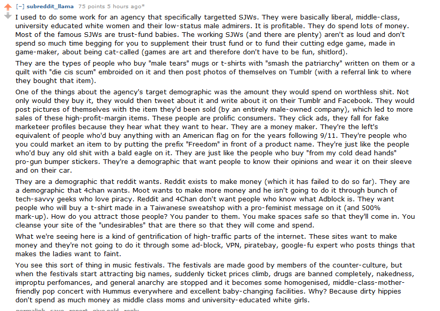

< < < Back
Reddit Melts Down Due To Incompetent Feminist CEO Ellen Pao – Return Of Kings
Barely eight months into her tenure as Reddit’s interim CEO, Ellen Pao has driven the site to the brink of extinction. Last week, a number of popular subreddits such as r/movies, r/history, and r/art shut down in response to the site’s sudden firing of director of talent Victoria Taylor, who was responsible for organizing Q&A sessions with celebrities and politicians on Reddit’s r/AMA (Ask Me Anything) page. With thousands of subreddits now offline, Reddit’s traffic as a whole has been severely crippled:
https://twitter.com/atlasnodded/status/616770170799980544
A Running Joke
With Reddit facing extinction, Pao and her lackeys have gone into damage control mode, issuing a series of half-hearted apologies and pledging to improve communication with the unpaid moderators responsible for managing the site’s subreddits. Despite her attempts to save her skin, Reddit users have had it with “Chairman Pao,” with a petition demanding that she resign as CEO nearing 100,000 signatures as of this writing.
Ellen Pao’s spectacular immolation of Reddit is the capstone to her joke of a career. Pao first exploded into the public eye when she sued her previous employer, Kleiner, Perkins, Caufield and Byers, for gender discrimination. Despite the fact that her suit was dismissed—and despite evidence that she sued her employer to cover up her poor job performance—Pao received accolades from the mainstream media and feminists for taking a stand against “sexism” in tech.
Taking over as CEO of Reddit was an opportunity for Pao to prove her naysayers wrong. Instead, she’s confirmed everything that Kleiner Perkins said about her and more. Ellen Pao is a prime example of “failing upwards” in the corporate world and an exemplar of how women can get ahead in life by simply crying oppression and claiming to be victims of misogyny.
Ellen Pao’s Sad, Strange Career
From day one of her hiring as Reddit’s CEO, Ellen Pao has been implementing bizarre policies based on her radical feminist beliefs. For example, several months ago, she banned prospective employees from negotiating their salaries based on spurious studies that women interviewees are disadvantaged in salary negotiations. Effectively, Pao was hurting men in order to help women, bringing everyone down to the lowest common denominator.
Pao followed up this act with a massive purge of subreddits that offended her SJW sensibilities. Last month, a new rule change banned “harassing” subreddits such as r/FatPeopleHate and other anti-SJW sections of the site. Curiously, pro-SJW subreddits such as r/ShitRedditSays (which has a long history of harassing people, including doxing GamerGate supporters) and r/TheBluePill (which basically exists to troll r/TheRedPill) were ignored. “Chairman Pao” justified her new thought control regime with this creepily Orwellian line: “We’re banning behavior, not ideas.”
Additionally, there’s an obvious undercurrent of money-grubbing to Pao’s leftist policies. Banning new hires from negotiating their salaries will obviously allow Reddit to underpay their employees under the guise of gender equality, but a contributor to the pro-GamerGate subreddit r/KotakuInAction gave a breakdown of why Pao has been so militant in cleansing non-SJWs from the site (click to expand):

Effectively, social justice warriors, who imagine themselves to be crusading against the Man, are in fact the Man’s most craven, mindless supporters. They’re brainless consumers, eagerly blowing money they don’t have on knickknacks they don’t need. Ellen Pao’s jihad against Reddit’s non-leftist userbase is a carefully calculated move to exploit the gullibility of the average SJW.
Going Too Far
Unfortunately for Chairman Pao and her supporters, her latest move was too much for Reddit’s users. With a large section of Reddit effectively shut down, the site is headed for Digg-style collapse and irrelevance. Pao’s attempts to placate her angry customers are too little too late, as the movement to oust her from her position has only grown in the days since Taylor’s dismissal.
It’s evidently clear that Ellen Pao must resign as Reddit’s CEO. Her tenure running the site has been a complete disaster: between her sexist crippling of male employees and her dictatorial anti-free speech policies, Pao has proven herself unfit to run any company.
However, given the overwhelming support she received from the mainstream media for her frivolous gender discrimination lawsuit, it will take concerted effort to force Pao from her perch of privilege.
Read More: Ellen Pao’s Anti-Male Hiring Policy Shows The Destructiveness Of Egalitarianism


{kind=link}